第九章:管理机器学习工作流程和部署
在前面的章节中，我们关注的是SageMaker相对简单的机器学习模型部署；也就是说，使用deploy()函数将单个模型部署到推理端点。在简单的实验和部署中，这将达到目的。然而，当处理涉及更复杂设置的需求时，我们需要有更多的锦囊妙计。
在本章中，我们将使用一组相对更复杂的部署解决方案来实现实时终端部署和自动化工作流。如下图所示，本章有三个主要关注领域——面向拥抱脸模型的深度学习模型部署、多模型端点部署以及ML工作流:
图9.1-本章中的配方是如何划分的
第一个重点领域涉及在SageMaker中微调和部署最先进的NLP模型。我们将使用拥抱面部变形金刚微调 PyTorch 中的变形金刚模型。早在2017年，变形金刚就席卷了世界，因为其架构和方法允许对大量数据进行训练。这使得这些模型的性能明显优于rnn和CNN。第二个重点领域涉及在单个端点内部署多个模型时的一些相关变化。其中包括执行多模型端点部署的不同方式，以及设置 A/B测试来帮助我们在更新模型之前确定哪个模型在生产中具有更好的性能。本章的第三个重点领域涉及使用步骤功能和 SageMaker管道来构建工作流，帮助编排和自动化机器学习过程和任务。借助这些工作流管理解决方案，我们将能够自动化和协调数据准备、培训、评估和部署等任务，而无需担心服务器管理。
也就是说，我们将在本章中介绍以下食谱:
- 与拥抱脸模特一起工作
- 准备多模型端点部署的先决条件
- 通过多模型端点托管多个模型
- 在具有生产变体的多个型号上设置 A/B测试
- 准备步骤功能执行角色
- 使用 AWS步骤功能和数据科学SDK 管理ML工作流
- 使用 SageMaker管道管理ML工作流程
一旦我们完成了本章中的配方，我们将对执行模型部署和自动化机器学习管道时可用的一些相关和有用的解决方案有更好的理解。
技术要求
要执行本章中的配方，请确保您具备以下条件:
- 一个亚马逊S3桶。
- 管理亚马逊SageMaker 和亚马逊S3 资源的权限，如果你使用的是带有自定义URL的 AWS IAM 用户。如果您使用的是root帐户，那么您应该能够继续本章中的食谱。但是，建议您以AWS IAM用户的身份登录，而不是在大多数情况下使用root帐户。要了解更多信息，请随意查看以下指南:https://docs . AWS . Amazon . com/IAM/latest/user guide/best-practices . html。
由于本章中的食谱涉及到一些代码，我们已经在本书的GitHub资源库中提供了笔记本:https://GitHub . com/packt publishing/Machine-Learning-with-Amazon-sage maker-Cookbook/tree/master/chapter 09。
在开始本章的每一个食谱之前，确保my-experiments/chapter09目录已经准备好。如果还没有创建，请现在就创建，因为这有助于在我们学习本书中的每一个食谱时保持事物的有序。
请点击以下链接查看动作视频中的相关代码:
与拥抱脸模特一起工作
抱脸 变形金刚库汇集了多个预先训练好的变形金刚模型来解决文本分类、文本生成、信息抽取等相关NLP任务。这些型号包括伯特、罗伯塔、 GPT 、 GPT-2 和其他最先进的变压器型号。使用预先训练好的模型有什么好处？有了预训练模型和转移学习，我们可以在更短的时间内得出准确的模型。这是因为我们可以从模型中的一组好的权重开始，这些模型已经被训练来解决一组类似的问题。
在这个菜谱中，我们将从预训练的 DistilBERT 模型开始，并使用来自 SageMaker Python SDK 的HuggingFace估计器类，以及一个定制的Python脚本文件，来微调我们的 DistilBERT 模型。我们将使用来自第8章的生成用于文本分类问题的合成数据集的合成文本数据，使用内置算法解决NLP、图像分类和时间序列预测问题，以微调 DistilBERT 模型，使其更适合我们的数据。除此之外，我们将演示如何使用PyTorchModel类来部署微调后的模型。
注意
如果你想知道蒸馏伯特是什么，它是“伯特的蒸馏版本”几年前，来自Transformers(BERT)框架的双向编码器表示在情感分析、句子分类、语义角色标注和其他相关NLP任务中取得了最先进的成果。通过使用知识蒸馏,拥抱脸的研究人员能够准备一个更小更快的模型，称为蒸馏瓶，而不会受到巨大的性能打击。关于这个话题的更多信息，请随意查看https://hugging face . co/transformers/model _ doc/distil Bert . html。
我们将使用这个模型来解决一个文本分类问题，类似于我们在培训中使用 BlazingText 模型和部署 第8章的一个BlazingText模型配方，使用内置的Alg 算法解决NLP、图像分类和时间序列预测问题。
准备就绪
对于这个食谱，你需要一个运行 Python 3(数据科学) 内核的 SageMaker Studio 笔记本。
如何 去做…
该配方中的第一组步骤着重于准备培训工作的先决条件。让我们开始吧:
- Create a new notebook using the Python 3 (Data Science) kernel inside the my-experiments/chapter09 directory and rename it to the name of this recipe (Working with Hugging Face models):

图9.2–创建新笔记本
在图9.2 中，我们可以看到如何从文件菜单创建一个新的笔记本。当提示使用内核时，选择Python 3(数据科学)。
- 如果脚本目录尚不存在，使用mkdir命令创建该目录:
!mkdir -p scripts
- 准备路径变量，使其指向存储entry_point脚本文件以及一些必备文件的位置:
g = "raw.githubusercontent.com" p = "PacktPublishing" a = "Machine-Learning-with-Amazon-SageMaker-Cookbook" mc = "master/Chapter09" path = f"https://{g}/{p}/{a}/{mc}/scripts" - 使用wget:
!wget -P scripts {path}/setup.py !wget -P scripts {path}/train.py !wget -P scripts {path}/inference.py !wget -P scripts {path}/requirements.txt将setup.py、train.py、inference.py和requirements.txt文件下载到脚本目录 - Locate the scripts directory in the File Browser: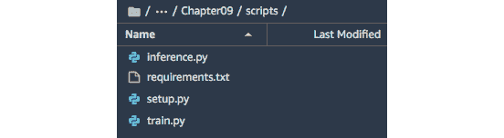
图9.3–脚本目录中下载的文件
在这里，我们可以看到脚本目录，其中包含requirements.txt、setup.py、train.py和inference.py文件。
- Inspect the train.py file inside the scripts directory: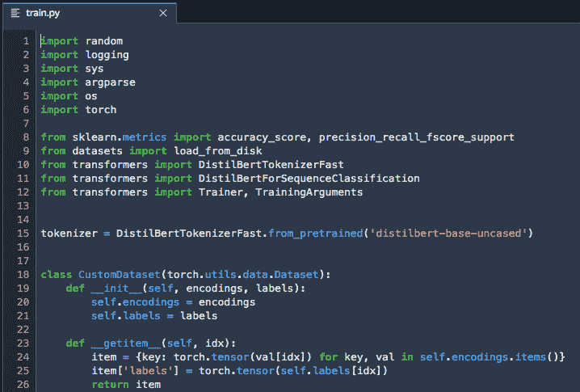
图9.4–train . py
这里，我们有一个名为train.py的entry_point脚本文件。它包含处理参数、加载训练和验证数据、标记和处理数据、加载预训练的DistilBert模型、使用处理的训练和验证数据微调模型以及保存模型的Python代码。
注意
这个菜谱中train.py文件的entry_point脚本文件的结构、流程和目标应该类似于我们在准备entrypoint PyTorch培训脚本第3章、使用机器学习和深度学习框架与Amazon SageMaker 中的内容。当然，这些脚本文件之间的一些主要差异包括在训练步骤中用于训练模型的库和数据。
- Quickly inspect the inference.py file inside the scripts directory: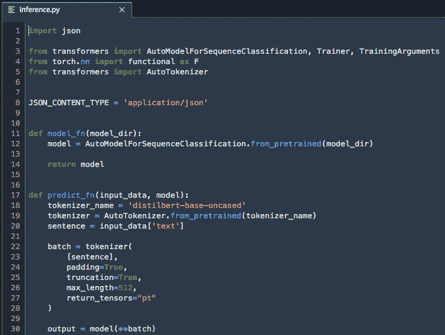
图9.5–推论. py文件
这里，我们有一个名为inference.py的entry_point脚本文件，它包含四个名为model_fn、predict_fn、input_fn和output_fn的函数。
- Next, inspect the requirements.txt file as well:
该文件包含单行–变压器==4.4.2。请注意，requirements.txt文件需要位于脚本目录中，以便在运行entry_point脚本文件之前，requirements.txt文件中的包会自动安装。
- 回到笔记本，使用mkdir命令创建tmp目录，如果它还不存在:
!mkdir -p tmp
- 准备path变量，使其指向存储训练和验证数据集的位置:
g = "raw.githubusercontent.com" p = "PacktPublishing" a = "Machine-Learning-with-Amazon-SageMaker-Cookbook" mc = "master/Chapter09" path = f"https://{g}/{p}/{a}/{mc}/files" - Use the wget command to download the files containing the training and validation data from this book's GitHub repository to the tmp directory:
!wget -P tmp {path}/synthetic.train.txt !wget -P tmp {path}/synthetic.validation.txt这些文件应该包含标签和文本对，类似于下面的代码块所示:
__label__negative Donut this is bad not impressive this is bad spaghetti chicken soup __label__positive Spaghetti Chicken Soup tastes good donut this is good this is good this is good tastes good
- 指定将存储数据的S3时段名称和前缀。确保将
的值替换为我们在准备亚马逊S3桶和线性回归实验的训练数据集配方 第1章 中创建的桶的名称，使用亚马逊SageMaker : s3_bucket = "<insert s3 bucket here>" prefix = "chapter09"
- 初始化变量，使指向训练和验证数据应该存储在亚马逊S3 :
s3_train_data = 's3://{}/{}/input/{}'.format( s3_bucket, prefix, "synthetic.train.txt" ) s3_validation_data = 's3://{}/{}/input/{}'.format( s3_bucket, prefix, "synthetic.validation.txt" )中的位置 - 使用 AWS CLI 上传包含训练和验证数据的TXT文件:
!aws s3 cp tmp/synthetic.train.txt {s3_train_data} !aws s3 cp tmp/synthetic.validation.txt {s3_validation_data} - Prepare and load the role ARN using the get_execution_role() function from the SageMaker Python SDK:
import sagemaker role = sagemaker.get_execution_role()
现在我们已经准备好了先决条件，我们可以专注于培训工作了。
- 初始化HuggingFace估计器对象。这里，我们将为model_name值指定distilbert-base-uncased:
from sagemaker.huggingface import HuggingFace hyperparameters = { 'epochs': 1, 'train_batch_size': 32, 'model_name':'distilbert-base-uncased' } estimator = HuggingFace( entry_point='train.py', source_dir='./scripts', instance_type='ml.p3.2xlarge', instance_count=1, role=role, transformers_version='4.4', pytorch_version='1.6', py_version='py36', hyperparameters=hyperparameters ) - 准备data_channels字典，它包含指向存储在亚马逊S3 :
from sagemaker.inputs import TrainingInput train_data = TrainingInput(s3_train_data) validation_data = TrainingInput(s3_validation_data) data_channels = { 'train': train_data, 'valid': validation_data }中的训练和验证数据集文件的训练输入对象 - Use the fit() function to start the training job:
%%time estimator.fit(data_channels)
这将产生一组日志，类似于下面的屏幕截图所示:
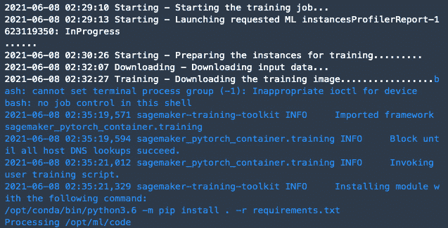图9.6–培训工作日志
这里，我们有调用fit()函数后生成的日志。
注意
这大约需要7到10分钟才能完成。在等待的时候，请随意喝杯咖啡或茶！
- 接下来，初始化PyTorchModel对象，并将inference.py指定为entry_point参数的值:
from sagemaker.pytorch.model import PyTorchModel model_data = estimator.model_data model = PyTorchModel( model_data=model_data, role=role, source_dir="scripts", entry_point='inference.py', framework_version='1.6.0', py_version="py3" )
- Deploy the model using the deploy() function:
%%time predictor = model.deploy( instance_type='ml.m5.xlarge', initial_instance_count=1 )
注意
完成此步骤需要7到10分钟。在等待的时候，你可以随便吃点东西！
- 更新预测器的串行化器和去串行化器:
from sagemaker.serializers import JSONSerializer from sagemaker.deserializers import JSONDeserializer predictor.serializer = JSONSerializer() predictor.deserializer = JSONDeserializer()
- Use the predict() function to test a NEGATIVE scenario:
test_data = { "text": "This tastes bad. I hate this place." } predictor.predict(test_data)这将返回一个负的字符串值。
- Use the predict() function again to test a POSITIVE scenario:
test_data = { "text": "Very delicious. I would recommend this to my friends" } predictor.predict(test_data)这将返回一个正的字符串值。
- Delete the endpoint afterward using the delete_endpoint() function:
predictor.delete_endpoint()
不要忘记这一步，因为您将为终端运行的时间付费。
工作原理……
在这个菜谱中，我们使用来自 SageMaker Python SDK 的HuggingFace estimator 类来微调我们的 DistilBERT 模型，以解决文本分类问题。
注意
请注意，我们不仅限于在这里使用 DistilBERT 。我们可以利用在这个配方中使用的同样的方法和解决方案来微调和部署模型，例如伯特、罗伯塔、 GPT-2 ，以及这里的其他基于变形金刚的NLP模型:https://huggingface.co/transformers/pretrained_models.html。
在处理HuggingFace模型部署时，需要注意的是，编写本文时还不支持Hugging Face估计器的deploy()函数。这意味着我们必须执行一个变通办法，使用来自 SageMaker Python SDK 的PyTorchModel类，以及一个定制的entry_point脚本，来帮助我们将模型部署到推理端点。我们总是可以退回到使用亚马逊SageMaker和SageMaker Python SDK的其他现有功能，以及我们的定制技能。
注意
请随意查看https://AWS . Amazon . com/blogs/machine-learning/announcing-managed-inference-for-hugging-face-models-in-Amazon-sage maker/了解更多关于这个主题的信息。
当使用来自 SageMaker Python SDK 的框架估算器时，例如TensorFlow、HuggingFace和PyTorch估算器类，我们需要确保在训练和部署步骤开始之前准备好以下文件和脚本:训练entry_point脚本文件、推理entry_point脚本文件和其他文件，例如requirements.txt文件，它们有助于在执行entry_point脚本文件之前安装必要的库。在training entry_point脚本文件中，我们使用以下代码行来微调和保存 DistilBERT 模型:
trainer = Trainer(model=model,...) eval_result = trainer.evaluate(...) trainer.save_model(model_dir)
一旦训练作业完成运行，模型工件被上传到model.tar.gz文件中的S3桶，然后在部署推理端点时被下载到推理容器。在推理entry_point脚本文件中，我们分别使用automodelforsequenceclassification . from _ pre trained()和AutoTokenizer.from_pretrained()函数加载了模型和标记器。
请随意查看使用亚马逊SageMaker本地模式培训和部署PyTorch模型 第三章 、使用机器学习和深度学习框架使用亚马逊SageMaker ，了解如何准备自定义entry_point脚本的更多信息。
还有更多……
我们只是触及了SageMaker Python SDK 的HuggingFace estimator类的皮毛。由于模型被微调，我们正在处理相对较大的ML实例，我们可能需要使用不同的解决方案来降低成本和加快训练时间。
使用SageMaker时显著降低成本的方法之一是在训练机器学习模型时使用点实例。有了 Spot实例，考虑到Spot实例的中断，与按需实例相比，我们可以降低大约70%到90%的成本。有了SageMaker，我们可以利用其管理的现场培训功能，这允许我们利用现场实例而不必担心细节。当然，需要做一些调整才能让它工作:
- 我们必须在train entry_point脚本文件中添加对在中断期间使用检查点进行保存和恢复的支持。
- 我们必须配置估计器，以便它可以使用管理的现场训练(例如，train_use_spot_instances=True)。
我们还可以通过数据并行和模型并行利用分布式训练。利用数据并行，训练集被分成小批量。然后，这些小批量用于在几个GPU实例中训练模型。这有助于减少训练时间，尤其是当我们处理较大的数据集时。另一方面，我们可以使用模型并行性在多个GPU和实例之间自动拆分大型深度学习模型。我们不会在本书中深入讨论这些细节，所以请随意查看https://sage maker-examples . readthe docs . io/en/latest/training/distributed _ training/index . html。
亦见
如果你正在寻找在真实数据集和更复杂的例子上使用SageMaker Python SDK 中的HuggingFace估计器的例子，请在这里随意查看一些专注于这个主题的笔记本:https://huggingface.co/transformers/sagemaker.html。
准备多模型端点部署的先决条件
在这个菜谱中，我们将准备一些多模型端点部署的先决条件，包括预训练模型文件和预训练模型文件将被上传到的S3路径。这些先决条件将用于托管具有多模型端点的多个模型和设置具有生产变体配方的多个模型的A/B测试。
准备就绪
为了这个食谱，你需要一台运行 Python 3(数据科学)内核的 SageMaker Studio 笔记本。
怎么做……
这个菜谱中的步骤主要是从本书的GitHub库中下载预先训练好的模型文件，并将它们上传到S3桶中。让我们开始吧:
- 在my-experiments/chapter09目录中使用Python 3(数据科学)内核创建一个新的笔记本，并将其重命名为这个配方的名称(准备多模型端点部署的先决条件)。
- 准备path变量，使其指向预先训练好的模型文件的存储位置:
path = "https://github.com/PacktPublishing/" + \ "Machine-Learning-with-Amazon-SageMaker-Cookbook/raw/master/" + \ "Chapter09/files/"
- Use the wget command to download the pre-trained model files to the tmp directory:
pretrained_model_a = path + "model.a.tar.gz" pretrained_model_b = path + "model.b.tar.gz" !wget -O tmp/model.a.tar.gz {pretrained_model_a} !wget -O tmp/model.b.tar.gz {pretrained_model_b}注意
如果你想知道我们从哪里得到这些预训练的模型文件，我们只是重用了我们在 第5章 、有效管理机器学习实验中训练的 XGBoost 模型中的两个。我们只是决定在这个菜谱中下载这些模型，这样我们就不用再训练这些模型了。
- 指定S3存储桶的名称和存储数据的前缀。确保将< insert s3 bucket name here >的值替换为我们在准备亚马逊s3 bucket和线性回归实验的训练数据集第1章 的配方，使用亚马逊SageMaker 开始机器学习:
s3_bucket = "<insert s3 bucket name here>" prefix = "chapter09"
中创建的bucket的名称 - 将预先训练好的模型文件上传到亚马逊S3 :
m_a = "files/model.a.tar.gz" m_b = "files/model.b.tar.gz" a = f"s3://{s3_bucket}/{prefix}/{m_a}" b = f"s3://{s3_bucket}/{prefix}/{m_b}" !aws s3 cp tmp/model.a.tar.gz {a} !aws s3 cp tmp/model.b.tar.gz {b} - 使用%store magic保存model_a_s3_path和model_b_s3_path的变量值:
model_a_s3_path = a model_b_s3_path = b %store model_a_s3_path %store model_b_s3_path
- Use the %store magic to save the variable values for s3_bucket and prefix:
%store s3_bucket %store prefix
我们将在随后的食谱中使用这些存储的变量值。
现在，让我们看看这是如何工作的！
工作原理……
在这个配方中，我们准备了多模型端点的先决条件。这包括模型文件，以及文件在S3中的存储路径。当使用多模型端点时，请注意，我们需要指定将在推理端点中使用的模型工件和容器图像。
也就是说，我们只是从这本书的GitHub库中下载了预先训练好的模型，然后将这些model.tar.gz文件上传到S3桶中。由于这些预先训练的模型工件是提前准备的，我们也知道它们是如何准备的，以及哪些内置算法和容器图像(例如， XGBoost )被用于训练模型。在接下来的菜谱中，我们将使用sagemaker.image_uris.retrieve()函数来获取 XGBoost 的容器图像URI。这将帮助我们完成多模型端点部署的先决条件。
通过多模型端点托管多个模型
在上一个菜谱中，我们为多模型端点部署准备了一些先决条件；即预训练模型文件和预训练模型文件将被上传到S3的路径。
在这个菜谱中，我们将使用SageMaker的多模型端点支持在单个端点中部署多个模型。有了多模型端点，我们可以降低成本，因为我们可以在一个端点内托管多个模型，而不是每个模型都有一个专用端点。这种方法在试运行或测试环境中也能很好地工作，在这些环境中，偶尔的冷启动延迟对于不常使用的模型来说是可以容忍的。
注意
如果你想知道我们从哪里得到这些预训练的模型，我们只是重用了我们在 第5章 、有效管理机器学习实验中训练的 XGBoost 模型中的两个。这些模型只接受a和b要素的数值，并返回预测的标注值。预测的标签值将是0.0和1.0之间的数字；如果预测值大于指定的阈值，例如0.8，我们可以简单地将结果值映射到1。
正在准备中
以下是该配方的先决条件:
- 该方法上接准备多模型端点部署的先决条件方法。
- 你将需要一台运行 Python 3(数据科学)内核的 SageMaker Studio 笔记本。
怎么做……
该方法中的第一组步骤主要是为多模型端点部署准备一些先决条件和参数值。让我们开始吧:
- 在my-experiments/chapter09目录中使用Python 3(数据科学)内核创建一个新的笔记本，并将其重命名为这个recipe的名称(托管具有多模型端点的多个模型)。
- 使用%store magic加载model_a_s3_path和model_b_s3_path的变量值:
%store -r model_a_s3_path %store -r model_b_s3_path
- 使用%store magic为s3_bucket和prefix加载变量值:
%store -r s3_bucket %store -r prefix
- 从 SageMaker Python SDK :
import sagemaker from sagemaker import get_execution_role session = sagemaker.Session() role = get_execution_role()
中导入并准备一些先决条件，比如会话和角色 - Use the retrieve() function to get the ECR image URI of the XGBoost built-in algorithm container image:
from sagemaker.image_uris import retrieve image_uri = retrieve( "xgboost", region="us-east-1", version="0.90-2" ) image_uri
小费
如果您在另一个区域运营，请随意更改区域值。
- Prepare the models_path variable where the model data for the multi-model endpoint will be stored:
models_path = f"s3://{s3_bucket}/model-artifacts/" - 初始化多数据模型对象:
from sagemaker.multidatamodel import MultiDataModel multi_model = MultiDataModel( name="chapter09-multi", model_data_prefix=models_path, image_uri=image_uri, role=role )
- 使用add_model()函数将模型数据从原始S3位置传输并存储到models_path变量:
multi_model.add_model(model_a_s3_path) multi_model.add_model(model_b_s3_path)
中指定的位置 - Use the deploy() function to start the multi-model endpoint deployment:
%%time endpoint_name = "chapter09-mma" multi_model.deploy( initial_instance_count=1, instance_type='ml.t2.medium', endpoint_name=endpoint_name )
注意
完成此步骤大约需要7到15分钟。在等待的时候，请随意喝杯咖啡或茶！
- 初始化预测器对象并更新其序列化器和反序列化器:
from sagemaker.predictor import Predictor from sagemaker.serializers import CSVSerializer from sagemaker.deserializers import JSONDeserializer predictor = Predictor( endpoint_name=endpoint_name ) predictor.serializer = CSVSerializer() predictor.deserializer = JSONDeserializer()
- Store the model identifiers inside the a and b variables:
a, b = list(multi_model.list_models())
这将分别为a和b变量提供chapter09/files/model.a.tar.gz和chapter09/files/model.b.tar.gz。
- Use the predict() function and specify which model to use by passing a as the value for the target_model parameter:
predictor.predict(data="10,-5", target_model=a)
这将返回一个类似于[0.895996630191803]的值。
- Similarly, use the predict() function and specify which model to use by passing b as the value for the target_model parameter:
predictor.predict(data="10,-5", target_model=b)
这将返回一个类似于[0.8308258652687073]的值。
- Finally, delete the endpoint using the delete_endpoint() function:
predictor.delete_endpoint()
现在，让我们看看这是如何工作的！
工作原理……
在这个菜谱中，我们使用了来自 SageMaker Python SDK 的MultiDataModel类来部署多模型端点。对于多模型端点，我们的模型文件存储在一个S3桶中。当端点被调用时，这些将被加载并用于推理:
图9.7–多模型端点
在上图中，我们可以看到，当在推理端点上执行调用请求时，模型被动态加载。当一个模型还没有被加载到ML实例中的容器内存中时，这个模型从S3桶中下载并被加载到内存中。这意味着后续调用会更快，因为模型已经被加载到内存中。有关更多信息，请随时查看https://docs . AWS . Amazon . com/sage maker/latest/DG/multi-model-endpoints . html。
在具有生产变型的多个模型上设置A/B测试
在处理生产部署时，请注意可能会同时部署和测试多个型号。这有助于数据科学家和机器学习工程师在处理这些模型以前没有见过的数据时，比较模型的性能。在生产中管理和测试多个模型的标准方法之一是通过在推理端点中使用 A/B测试。什么是 A/B测试？它是一个实验，包括从部署的模型列表中随机选择一个模型来执行预测。它有助于在完全替换已部署的模型之前，识别生产中性能更好(或最好)的模型。
在这个菜谱中，我们将使用SageMaker的多模型端点支持，在单个端点内部署两个预训练的 XGBoost 模型。我们将配置和设置此端点，以允许 A/B测试已经部署在此端点中的预训练模型的。
注意
如果你想知道我们从哪里得到这些预训练的模型，我们只是重用了我们在 第5章 、有效管理机器学习实验中训练的 XGBoost 模型中的两个。这些模型只接受a和b要素的数值，并返回预测的标注值。预测的标签值将是0.0和1.0之间的数字；如果预测值大于指定的阈值，例如0.8，我们可以简单地将结果值映射到1。
一旦这个 A/B测试设置被配置和部署，流量应该在两个模型之间随机分配。
准备就绪
以下是这个食谱的先决条件:
- 该方法上接准备多模型端点部署的先决条件方法。
- 你需要一台运行Python 3(数据科学)内核的 SageMaker Studio 笔记本。
怎么做……
- 在my-experiments/chapter09目录中使用Python 3(数据科学)内核创建一个新的笔记本，并将其重命名为该配方的名称(在具有生产变量的多个模型上设置A/B测试)。
- 使用%store magic加载model_a_s3_path和model_b_s3_path的变量值:
%store -r model_a_s3_path %store -r model_b_s3_path
- 使用%store magic为s3_bucket和prefix加载变量值:
%store -r s3_bucket %store -r prefix
- 从SageMaker Python SDK:
import sagemaker from sagemaker import get_execution_role session = sagemaker.Session() role = get_execution_role()
中导入并准备一些先决条件，如会话、角色等 - Use the retrieve() function to get the ECR image URI of the XGBoost built-in algorithm container image:
from sagemaker.image_uris import retrieve image_uri = retrieve( "xgboost", region="us-east-1", version="0.90-2" ) image_uri
这应该给我们一个等于或类似于683313688378 . dkr . ECR . us-east-1 . Amazon AWS . com/sage maker-xgboost:0.90-2-CPU-py3 for image _ uri的值。
- 为容器1和容器2变量准备字典值:
image_uri_a = image_uri image_uri_b = image_uri container1 = { 'Image': image_uri_a, 'ContainerHostname': 'containerA', 'ModelDataUrl': model_a_s3_path } container2 = { 'Image': image_uri_b, 'ContainerHostname': 'containerB', 'ModelDataUrl': model_b_s3_path } - 为SageMaker服务
import boto3 sm_client = boto3.Session().client('sagemaker')准备低级boto3客户端 - 准备模型名称a、模型名称b、端点配置名称和端点名称的变量值:
model_name_a = "ab-model-a" model_name_b = "ab-model-b" endpoint_config_name = 'ab-endpoint-config' endpoint_name = 'ab-endpoint'
- 可选地，使用delete_model()函数删除任何现有的模型，以确保下一步成功且没有问题:
try: sm_client.delete_model(ModelName=model_name_a) sm_client.delete_model(ModelName=model_name_b) except: pass
- Use the create_model() function to create the two models in SageMaker. For each of these models, we specify the model's name, role, and the container image URI when calling the create_model() function:
response = sm_client.create_model( ModelName = model_name_a, ExecutionRoleArn = role, Containers = [container1]) print(response) response = sm_client.create_model( ModelName = model_name_b, ExecutionRoleArn = role, Containers = [container2]) print(response)
这将产生一组日志，类似于下面的屏幕截图所示:
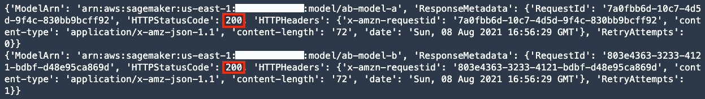图9.8–使用create_model()后的响应值
在这里，我们可以看到我们的create_model()调用已经成功，因为HTTPStatusCode值返回了200。
- 为上一步中创建的每个模型准备相应的生产变型。这里，我们还将为每个模型预期接收的流量部分指定一个50/50的分割:
from sagemaker.session import production_variant variant1 = production_variant( model_name=model_name_a, instance_type="ml.t2.medium", initial_instance_count=1, variant_name='VariantA', initial_weight=0.5 ) variant2 = production_variant( model_name=model_name_b, instance_type="ml.t2.medium", initial_instance_count=1, variant_name='VariantB', initial_weight=0.5 )
- Use the endpoint_from_production_variants() function to start the deployment:
session.endpoint_from_production_variants( name=endpoint_name, production_variants=[variant1, variant2] )
注意
这大约需要10分钟才能完成。请随意喝杯咖啡或茶！
- Prepare the boto3 client for SageMaker Runtime:
runtime_sm_client = boto3.client('sagemaker-runtime')注意
boto3.client('sagemaker ')和boto 3 . client(' sage maker-runtime ')有什么区别？ SageMaker运行时客户端只关注使用invoke_endpoint()函数调用SageMaker推理端点。另一方面， SageMaker 客户端提供了一整套功能，这些功能映射到可以用SageMaker服务执行的API动作。这包括create_auto_ml_job()、create_training_job()、create_endpoint()和create_transform_job()函数，以及此列表中的所有函数:https://boto 3 . Amazon AWS . com/v1/documentation/API/latest/reference/services/sage maker . html。
- Test the A/B testing setup by using the invoke_endpoint() function without specifying the target variant:
from time import sleep body = "10,-5" def test_ab_testing_setup(): response = runtime_sm_client.invoke_endpoint( EndpointName=endpoint_name, ContentType='text/csv', Body=body ) variant = response['InvokedProductionVariant'] b = response['Body'].read() prediction = b.decode("utf-8") print(variant + " - "+ prediction) for _ in range(0,10): test_ab_testing_setup() sleep(1)这应该会产生类似于以下屏幕截图所示的日志消息:
图9.9–验证推理端点的A/B测试设置
在这里，我们可以看到我们的 A/B测试设置工作很好。调用invoke_endpoint()函数时，有时会调用VariantA其他时候，会调用VariantB。
注意
同时，不要担心这些预测值意味着什么；我们这里的目标是用 A/B测试设置从已部署模型列表中触发一个随机模型。
- Finally, delete the endpoint by using the delete_endpoint() function:
sm_client.delete_endpoint( EndpointName=endpoint_name )
不要忘记这一步，因为您将为终端运行的时间付费。
现在，让我们看看这是如何工作的！
工作原理……
在这个方法中，我们设置了一个支持模型A/B测试的多模型端点。这里，我们配置了我们的推理端点，将50%的流量传递给第一个模型，将另外50%的流量传递给第二个模型。流量分布是在我们准备生产变量时配置的，如以下代码块所示:
variant1 = production_variant( model_name=model_name_a, variant_name='VariantA', initial_weight=0.5, ... ) variant2 = production_variant( model_name=model_name_b, variant_name='VariantB', initial_weight=0.5, ... )
如果您想知道我们是否可以改变流量分配，使第一个模型接收大约80%的流量，而第二个模型接收大约20%的流量，那么答案将是是的。对于生产变量A和B，只需将initial_weight值分别更新为0.8和0.2即可。
如果您也想知道我们是否可以对不同型号系列的型号进行A/B测试，那么答案也是是的。我们只需要在使用这些模型准备生产变体之前注册模型，如以下代码行所示:
sm_client.create_model(Containers=[container1], ...) sm_client.create_model(Containers=[container2], ...)
我们所需要做的就是根据预训练模型的模型系列来指定不同的容器图像。
注意
您可能还想知道为什么create_model()函数中的Containers参数接受列表而不是单个字符串值。这是因为我们可以建立一个包含线性容器序列的推理管道来处理单个端点调用请求。要了解更多信息，请随时查看https://docs . AWS . Amazon . com/sage maker/latest/DG/inference-pipelines . html。
还有更多…
即使有了A/B测试配置和设置，我们也可以直接调用特定的变体。我们可以通过使用invoke_endpoint()函数并指定我们想要调用的目标变量的名称作为target variant参数的值来实现这一点。以下是执行此操作的示例代码块:
response = runtime_sm_client.invoke_endpoint( EndpointName=endpoint_name, ContentType='text/csv', TargetVariant='VariantB', Body=body )
- 当使用invoke_endpoint()函数直接调用每个变量时，使用来自测试数据集的数据作为有效负载。这应该给我们两组不同的预测值，因为我们在这个配方中使用了两个变量。
- 使用来自测试数据集的已知目标值和来自端点调用的预测值，我们可以评估每个部署模型的性能，并计算回归模型的 RMSE 、 MSE 和 MAE ，以及分类器模型的 AUC 、精确度、精确度和召回。
- 一旦我们计算了每个模型的度量值，我们就可以确定哪个模型“更好”
之后，我们可以为我们部署的每个变体更新流量分布的配置。我们可以通过在SageMaker boto3客户端中使用update _ endpoint _ weights _ and _ capacities()函数来执行这一配置更改。我们不会在这本书里深入探究细节，所以请随意查看https://docs . AWS . Amazon . com/sage maker/latest/DG/model-a b-testing . html了解更多信息。
准备步骤功能执行角色
在这个菜谱中，我们将创建一个IAM执行角色，它将允许我们创建和执行 AWS步骤功能工作流。首先，我们将创建一个具有步骤功能的执行角色，作为AWS服务可信实体类型。然后，我们将向这个角色添加一个内联策略，并为这个执行角色分配必要的权限。
重要说明
什么是IAM角色？IAM角色是一个IAM身份，用于委托对实体和资源的访问。该角色可由资源承担，以获得执行特定任务所需的权限。在我们的例子中，我们将创建一个具有创建和执行步骤功能工作流权限的角色。该角色将用于使用AWS步骤功能和数据科学SDK 方法管理ML工作流。如需更多信息，请随时查看https://docs . AWS . Amazon . com/IAM/latest/user guide/id _ roles _ terms-and-concepts . html。
准备就绪
对于这个菜谱，您将需要创建和管理 AWS IAM 角色、策略和其他资源的权限。
怎么做……
这个方法中的步骤主要是使用AWS控制台准备执行角色。让我们开始吧:
- Navigate to the IAM console using the search bar, similar to what is shown in the following screenshot: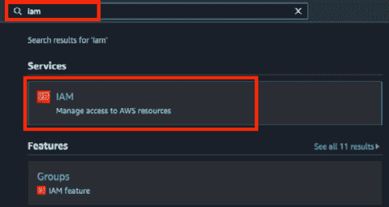
图9.10–导航到IAM控制台
- In the navigation pane, locate and click Roles under Access management: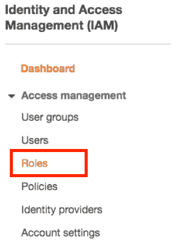
图9.11–导航到角色页面
正如我们所看到的，我们可以在访问管理下的用户和策略之间找到角色页面的链接。
- Click the Create role button, as shown in the following screenshot: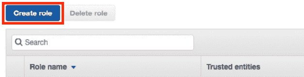
图9.12–创建角色按钮
我们应该看到 Create role 按钮，类似于前面的截图，位于页面顶部，导航窗格附近。
- Choose AWS service under Select type of trusted entity: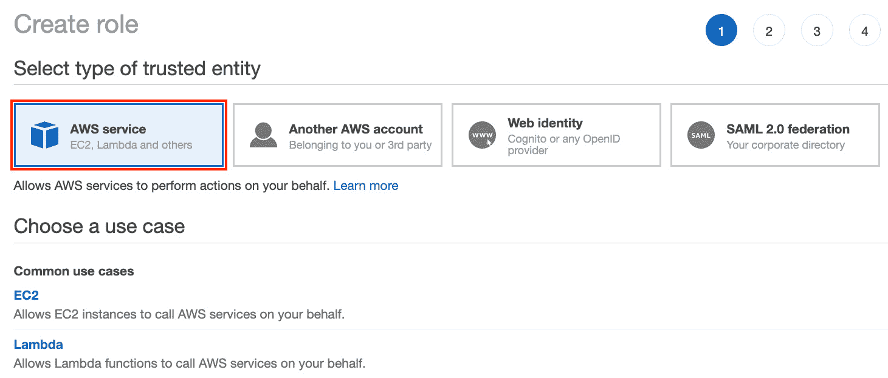
图9.13–选择AWS服务可信实体类型
- Under Choose a use case, select Step Functions: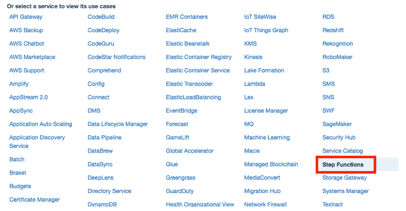
图9.14–选择一个用例
如我们所见，我们选择了步进功能(右下角)。因为服务是按字母顺序排序的，所以应该相对容易找到。
- Click the Next: Permissions button: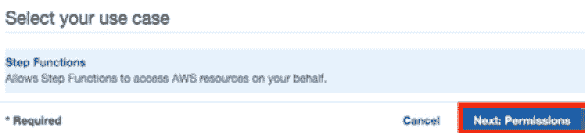
图9.15–定位下一个:权限按钮
- Click the Next: Tags button at the bottom of the page, as shown in the following screenshot: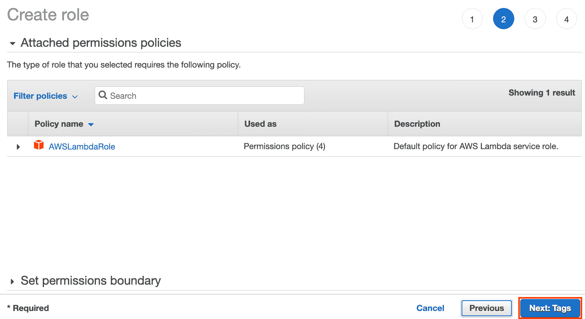
图9.16–定位下一个:标签按钮(右下方)
在这里，我们可以看到一个附加的权限策略。请注意，默认附加的权限策略不足以创建和执行步骤功能工作流。在本菜谱的后面，我们将为该角色附加一个自定义内联策略，这将帮助我们执行使用AWS步骤函数和Data Science SDK 管理ML工作流中所需的步骤。
- 在添加标签(可选)页面上，点击下一步:查看按钮。
- On the Create Role — Review page, specify the Role name value (for example, sf-execution-role). Click the Create role button afterward: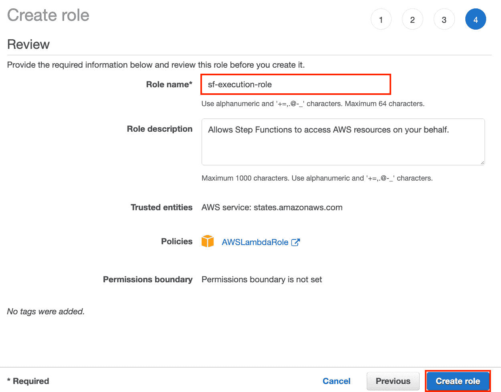
图9.17–审查页面
- A success notification will appear, similar to what is shown in the following screenshot. Click the link (for example, sf-execution-role in this case) to view and modify the details and configure the role:
图9.18-角色成功创建成功通知
或者，通过使用角色名称搜索角色来导航到特定角色页面。
接下来的一组步骤集中在为我们在这个菜谱的前半部分创建的角色添加一个带有额外权限的内联策略。
- 在
里面
图9.19–定位添加内嵌策略按钮
在这里，我们可以看到添加内嵌策略按钮位于权限选项卡的右上角。
图9.20–创建策略JSON选项卡
在这里，我们可以看到，我们可以直接编辑JSON策略，而不必使用可视化编辑器选项卡。
图9.21–本书GitHub资源库中的JSON策略
您可以决定从呈现的05-准备步骤函数执行Role.ipynb 笔记本中复制JSON 策略，如前面的截图所示，或者使用Chapter09目录中的files/role.json文件中的策略JSON。
小费
你可以在这里找到JSON策略:https://github . com/packt publishing/Machine-Learning-with-Amazon-sage maker-Cookbook/tree/master/chapter 09。请注意，在将此策略用于生产环境之前，需要用更安全的配置对其进行审查和更新。
图9.22–使用文本区域中的JSON策略值创建策略JSON选项卡
在这里，我们可以看到，当在可视化编辑器上使用该选项时，我们可以指定某个级别的粒度。在文本区域中更新JSON策略值后，单击 Review policy 按钮。
图9.23–从摘要页面复制角色ARN
请随意将该值复制到文本文件中。它的格式应该类似于arn:AWS:iam::01234567890:role/SF-execution-role。我们将在使用AWS步骤函数和Data Science SDK 方法管理ML工作流中使用该ARN值。
现在，让我们看看这是如何工作的！
工作原理……
在这个配方中，我们准备了一个 IAM角色，它将在我们初始化下一个配方中的工作流对象时使用。如果没有正确配置该角色，我们将无法使用使用AWS步骤功能管理ML工作流中的步骤功能数据科学SDK 和数据科学SDK 方法创建和执行步骤功能工作流。
一旦我们创建了IAM角色，我们就创建并附加了一个内嵌策略，该策略允许承担角色的实体创建、执行和管理步骤功能工作流。什么是内联策略呢？内嵌策略是与角色、用户或组相关联的策略，在防止策略的权限意外分配给另一个身份时非常有用。有关该主题的更多信息，请在此处查看托管策略和内联策略之间的差异:https://docs . AWS . Amazon . com/IAM/latest/user guide/access _ policies _ managed-vs-inline . html。
使用AWS Step函数和Data Science SDK管理ML工作流
AWS步骤功能是一个无服务器的编排服务，帮助使用多个AWS服务集成和排序任务。有了这项服务，我们只需专注于配置工作流，减少管理分布式复杂应用程序的运营开销。
在这个菜谱中，我们将使用数据科学SDK 来创建和管理自动化ML工作流和 AWS步骤函数。我们将在 第一章 、使用亚马逊SageMaker 开始机器学习的的基础上构建，在那里我们训练并部署了一个线性学习器模型来解决一个回归问题。一旦我们完成了这个配方中的步骤，我们将能够使用步骤功能状态机执行端到端的自动化工作流程，而无需在Jupyter笔记本中手动运行脚本。
准备就绪
以下是这个食谱的先决条件:
- 你需要一台运行 Python 3(数据科学)内核的 SageMaker Studio 笔记本。
- 确保与 SageMaker Studio 关联的执行角色拥有使用 AWS步骤功能资源的必要权限。您可能需要将AWSStepFunctionsFullAccess策略附加到上述执行角色。
怎么做……
该配方中的第一组步骤集中于为步骤功能工作流程准备好先决条件。让我们开始吧:
- 在my-experiments/chapter09目录中使用Python 3(数据科学)内核创建一个新的笔记本，并将其重命名为该配方的名称(使用AWS Step函数和数据科学SDK管理ML工作流)。
- 如果tmp目录尚不存在，使用mkdir命令创建该目录:
!mkdir -p tmp
- 准备path变量，使其指向将在该配方中使用的CSV文件的位置:
g = "raw.githubusercontent.com" p = "PacktPublishing" a = "Machine-Learning-with-Amazon-SageMaker-Cookbook" mc = "master/Chapter01" path = f"https://{g}/{p}/{a}/{mc}/files" - Use the wget command to download the CSV file from this book's GitHub repository to the tmp directory:
fname = "management_experience_and_salary.csv" !wget -P tmp {path}/{fname}注意，这是我们在第一章 、使用亚马逊SageMaker 的机器学习入门中使用的同一个CSV文件。
- 使用pandas的read_csv()函数到将csv文件的内容加载到数据帧:
import pandas as pd filename = f"tmp/{fname}" df_all_data = pd.read_csv(filename) - 使用sklearn:
from sklearn.model_selection import train_test_split dad = df_all_data X = dad['management_experience_months'].values y = dad['monthly_salary'].values X_train, X_test, y_train, y_test = train_test_split( X, y, test_size=0.3, random_state=0 )
中的train_test_split()函数执行训练测试分割 - 准备包含训练数据的数据帧。注意，第一列包含目标变量值(例如，monthly_salary):
import pandas as pd df_training_data = pd.DataFrame({ 'monthly_salary': y_train, 'management_experience_months': X_train }) - 使用to_csv()函数将df_training_data数据帧的内容存储到
df_training_data.to_csv( 'tmp/training_data.csv', header=False, index=False )
CSV文件中 - 指定将存储数据的S3时段名称和前缀。确保将
的值替换为我们在准备亚马逊S3桶和线性回归实验的训练数据集配方 第1章 中创建的桶的名称，使用亚马逊SageMaker : s3_bucket = '<insert s3 bucket name here>' prefix = 'chapter09'
- 使用 AWS CLI 将tmp目录下的training_data.csv文件上传到S3 bucket:
tn = "training_data.csv" source = f"tmp/{tn}" dest = f"s3://{s3_bucket}/{prefix}/input/{tn}" !aws s3 cp {source} {dest} - 从SageMaker Python SDK:
import sagemaker import boto3 from sagemaker import get_execution_role role = get_execution_role() session = sagemaker.Session() region_name = boto3.Session().region_name
中导入并准备一些先决条件，如会话、角色等 - 准备训练_ S3 _输入_位置和训练_ S3 _输出_位置的变量值:
training_s3_input_location = f"s3://{s3_bucket}/{prefix}/input/training_data.csv" training_s3_output_location = f"s3://{s3_bucket}/{prefix}/output/" - 准备训练输入对象用于训练数据:
from sagemaker.inputs import TrainingInput train = TrainingInput( training_s3_input_location, content_type="text/csv" )
- Use the retrieve() function to get the container image URI for linear learner:
from sagemaker.image_uris import retrieve container = retrieve( "linear-learner", region_name, "1" ) container
容器变量的值应该等于或类似于382416733822 . dkr . ECR . us-east-1 . Amazon AWS . com/linear-learner:1。
- 初始化评估器对象:
estimator = sagemaker.estimator.Estimator( container, role, instance_count=1, instance_type='ml.m5.xlarge', output_path=training_s3_output_location, sagemaker_session=session )
- 使用set_hyperparameters()函数配置超参数值:
estimator.set_hyperparameters( predictor_type='regressor', mini_batch_size=4 )
- 使用pip安装 AWS Step函数Data Science SDK :
!pip -q install --upgrade stepfunctions
- Set the variable value of execution_role to the ARN of the IAM role ARN we prepared in the Preparing the Step Functions execution role recipe:
execution_role = '<insert role arn here>'
execution_role变量值的格式应该类似于arn:AWS:iam::01234567890:role/SF-execution-role。
重要说明
在继续下一组步骤之前，确保与 SageMaker Studio 关联的执行角色拥有使用和创建 AWS步骤功能资源的必要权限。您可以将AWSStepFunctionsFullAccess策略附加到所述执行角色。
- 初始化execution input对象:
from stepfunctions.inputs import ExecutionInput execution_input = ExecutionInput( schema={ 'ModelName': str, 'EndpointName': str, 'JobName': str } ) ei = execution_input - 初始化的训练步骤对象:
from stepfunctions.steps import TrainingStep training_step = TrainingStep( 'Training Step', estimator=estimator, data={ 'train': train }, job_name=ei['JobName'] ) - 初始化的模型步骤对象:
from stepfunctions.steps import ModelStep model_step = ModelStep( 'Model Step', model=training_step.get_expected_model(), model_name=ei['ModelName'] )
- 接下来，初始化EndpointConfigStep对象:
from stepfunctions.steps import EndpointConfigStep endpoint_config_step = EndpointConfigStep( "Create Endpoint Configuration", endpoint_config_name=ei['ModelName'], model_name=ei['ModelName'], initial_instance_count=1, instance_type='ml.m5.xlarge' )
- Initialize the EndpointStep object:
from stepfunctions.steps import EndpointStep endpoint_step = EndpointStep( "Deploy Endpoint", endpoint_name=ei['EndpointName'], endpoint_config_name=ei['ModelName'] )
注意
如果您想知道TrainingStep、ModelStep、EndpointConfigStep和EndpointStep的用途，请不要担心，我们将在其工作原理……部分讨论这些内容。
- 初始化链对象。这个将用于连接我们在前一组步骤
from stepfunctions.steps import Chain workflow_definition = Chain([ training_step, model_step, endpoint_config_step, endpoint_step ])
中准备的TrainingStep、ModelStep、EndpointConfigStep和EndpointStep对象 - 定义generate_random_string()函数:
import uuid def generate_random_string(): return uuid.uuid4().hex grs = generate_random_string
- 初始化工作流对象:
from stepfunctions.workflow import Workflow workflow = Workflow( name='{}-{}'.format('Workflow', grs()), definition=workflow_definition, role=execution_role, execution_input=execution_input ) - Create the workflow using the create() function:
workflow.create()
重要说明
如果在调用create()函数时遇到AccessDeniedException，请确保与 SageMaker Studio 关联的执行角色拥有创建 AWS步骤函数资源的必要权限。您可以将AWSStepFunctionsFullAccess策略附加到所述执行角色来解决此问题。
- Use the execute() function to execute the workflow:
execution = workflow.execute( inputs={ 'JobName': 'll-{}'.format(grs()), 'ModelName': 'll-{}'.format(grs()), 'EndpointName': 'll-{}'.format(grs()) } )小费
要检查和调试执行工作流的配置，可以运行print(workflow . definition . to _ JSON(pretty = True))。
- Navigate back to the Studio notebook and use the list_events() function to get more details on the execution:
import pandas as pd events = execution.list_events() pd.json_normalize(events)
这将为我们提供一个值的数据框架，类似于下面的屏幕截图所示:
图9.24–执行事件详细信息
在这里，我们对步骤函数工作流中每个步骤的进度有了更好的了解。此时，我们需要做的就是等待工作流的执行完成。如果我们需要再次执行这个工作流，我们需要做的就是使用Workflow.attach()和execute()函数将它附加到一个现有的状态机。
重要说明
不要忘记删除在这个配方中创建的推理端点，因为工作流会自动训练和部署模型。
现在，让我们看看这是如何工作的！
它是如何工作的……
自动化机器学习工作流允许数据科学和MLOps团队显著加快训练和部署机器学习模型的过程。在这个菜谱中，我们使用了 Data Science SDK 来使用Python代码自动生成一个Step Functions工作流状态机。通过这种方法，可以很容易地将现有的使用 SageMaker Python SDK 的笔记本转换为使用步骤函数和数据科学SDK 的自动化工作流。在 AWS步骤函数Data Science SDK 中有几个类映射到机器学习工作流中的相应步骤或任务:
- TrainingStep:这侧重于执行一个训练作业来构建一个机器学习模型。
- ModelStep:这主要是在SageMaker中创建和注册一个模型。
- TransformStep:这主要是执行一个SageMaker 批处理转换作业，它使用一个经过训练的模型来获得推理，而不需要一个实时的推理端点。
- EndpointConfigStep:这侧重于创建端点配置。
- EndpointStep:这主要是创建或更新一个推理端点。
- TuningStep:这主要是执行一个自动模型调整任务。
- 处理步骤:这主要是执行一个 SageMaker处理任务。
如果我们将导航到Step Functions控制台，我们将看到状态机执行的可视化工作流图，类似于下图所示。在这里，我们可以看到我们已经自动执行了本书前面章节中手动运行的步骤:
图9.25–步骤功能可视化工作流程
在图9.25中，我们可以看到所有的步骤都已成功完成。如果您想知道我们是否可以使用不同的AWS服务以及条件分支逻辑来设计更复杂的步骤函数工作流，那么答案将是是。请注意，我们还可以在工作流中创建执行的并行分支，以及在出现运行时错误时处理错误情况。我们不会在本书中深入使用步骤函数的细节，所以可以随意查看https://docs . AWS . Amazon . com/Step-Functions/latest/DG/how-Step-Functions-works . html以了解更多信息。
参见
如果您正在寻找在真实数据集上使用步骤函数和数据科学SDK 的示例以及更复杂的示例，请在此随意查看一些关注此主题的示例:https://sagemaker-examples . readthedocs . io/en/latest/Step-Functions-Data-Science-SDK/index . html。
使用SageMaker管道管理ML工作流程
SageMaker Pipelines 是一个专门构建的CI/CD 和编排服务，有助于自动化、管理和重用机器学习工作流。它与SageMaker的不同特性和功能紧密集成，这使得数据科学家和机器学习工程师可以轻松地使用它来满足SageMaker服务的 MLOps 需求。
在本菜谱中，我们将使用 SageMaker Pipelines 来创建和管理自动化的ML工作流程。我们将使用一个简化的示例，该示例包括一个处理步骤的顺序工作流，随后是一个培训步骤。处理步骤利用 SageMaker处理来执行训练-测试分割，而训练步骤集中于使用由处理步骤准备的训练数据来训练线性学习器模型。一旦我们完成了这个配方中的步骤，我们将能够使用 SageMaker Pipelines 执行端到端的自动化管道，而无需在Jupyter笔记本中手动运行脚本。
准备就绪
对于这个食谱，你需要一个运行Python 3(数据科学)内核的笔记本。
怎么做……
这个配方主要是使用 SageMaker管道创建和执行一个基本的工作流程。让我们开始吧:
- 在my-experiments/chapter09目录中使用Python 3(数据科学)内核创建一个新的笔记本，并将其重命名为该配方的名称(使用SageMaker管道管理ML工作流)。
- 如果tmp目录尚不存在，使用mkdir命令创建该目录:
!mkdir -p tmp
- 准备路径变量，使其指向本配方中使用的CSV文件的位置:
g = "raw.githubusercontent.com" p = "PacktPublishing" a = "Machine-Learning-with-Amazon-SageMaker-Cookbook" mc = "master/Chapter01" path = f"https://{g}/{p}/{a}/{mc}/files" - 使用wget命令将CSV文件下载到tmp目录:
csv = "management_experience_and_salary.csv" !wget -P tmp {path}/{csv} - 指定S3存储桶的名称和存储数据的前缀。确保将< insert s3 bucket name here >的值替换为我们在第一章 的准备亚马逊s3 bucket和线性回归实验的训练数据集中创建的bucket的名称:
s3_bucket = '<insert s3 bucket name here>' prefix = 'chapter09' input_data_uri = f"s3://{s3_bucket}/{prefix}/input/{csv}" - 使用 AWS CLI 将CSV文件从tmp目录上传到S3桶:
!aws s3 cp tmp/{csv} {input_data_uri} - 准备与处理实例类型、培训实例类型、输入数据的S3位置的工作流参数值对应的ParameterString对象:
from sagemaker.workflow.parameters import ( ParameterInteger, ParameterString, ) processing_instance_type = ParameterString( name="ProcessingInstanceType", default_value="ml.m5.xlarge" ) training_instance_type = ParameterString( name="TrainingInstanceType", default_value="ml.m5.xlarge" ) input_data = ParameterString( name="InputData", default_value=input_data_uri, )
- 从SageMaker Python SDK:
from sagemaker import get_execution_role role = get_execution_role()
中导入并准备一些先决条件，如角色 - 准备path变量，使它指向preprocessing.py脚本文件在本书的GitHub存储库中的位置:
g = "raw.githubusercontent.com" p = "PacktPublishing" a = "Machine-Learning-with-Amazon-SageMaker-Cookbook" mc = "master/Chapter09" path = f"https://{g}/{p}/{a}/{mc}/scripts" - Download the preprocessing.py script file from this book's GitHub repository to the tmp directory:
!wget -P tmp {path}/preprocessing.py这应该在tmp目录中下载一个文件，类似于下面截图中显示的。我们可以使用文件浏览器检查tmp/preprocessing.py的内容:
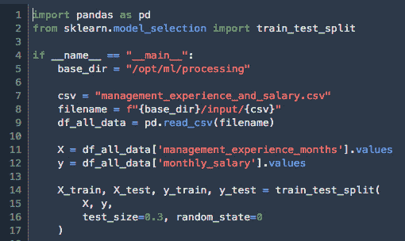图9.26-预处理. py
preprocessing.py脚本文件侧重于执行训练-测试分割和准备训练数据CSV文件，以便为训练作业做好准备。
- 初始化SKLearnProcessor对象:
from sagemaker.sklearn.processing import SKLearnProcessor framework_version = "0.23-1" sklearn_processor = SKLearnProcessor( framework_version=framework_version, instance_type=processing_instance_type, instance_count=1, role=role, )
- 初始化的处理步骤对象:
from sagemaker.processing import ProcessingInput, ProcessingOutput from sagemaker.workflow.steps import ProcessingStep step_process = ProcessingStep( name="ProcessingStep", processor=sklearn_processor, inputs=[ ProcessingInput( source=input_data, destination="/opt/ml/processing/input" ), ], outputs=[ ProcessingOutput( output_name="output", source="/opt/ml/processing/output" ), ], code="tmp/preprocessing.py", )
- 从SageMaker Python SDK:
import sagemaker import boto3 session = sagemaker.Session() region_name = boto3.Session().region_name
中导入并准备一些先决条件，如session和region_name - 初始化评估对象，并使用set_hyperparameters()函数指定超参数:
from sagemaker.image_uris import retrieve model_path = f"s3://{s3_bucket}/{prefix}/model" container = retrieve( "linear-learner", region_name, "1" ) estimator = sagemaker.estimator.Estimator( container, role, instance_count=1, instance_type='ml.m5.xlarge', output_path=model_path, sagemaker_session=session ) estimator.set_hyperparameters( predictor_type='regressor', mini_batch_size=4 ) - 初始化的训练步骤对象:
from sagemaker.inputs import TrainingInput from sagemaker.workflow.steps import TrainingStep s3_input_data = step_process.properties.ProcessingOutputConfig.Outputs["output"].S3Output.S3Uri step_train = TrainingStep( name="TrainStep", estimator=estimator, inputs={ "train": TrainingInput( s3_data=s3_input_data, content_type="text/csv", ) }, ) - 初始化管道对象:
from sagemaker.workflow.pipeline import Pipeline pipeline = Pipeline( name="Pipeline", parameters=[ processing_instance_type, training_instance_type, input_data, ], steps=[step_process, step_train], )
- 使用upsert()函数将我们在前面步骤中准备的管道定义提交给 SageMaker管道服务。如果管道还不存在，这将创建一个管道:
pipeline.upsert(role_arn=role)
- Start the pipeline's execution using the start() function:
execution = pipeline.start()
注意
请注意，start()函数不会等待管道完成执行。您可能会惊讶地发现，运行前面一行代码只需要一秒钟或更少的时间就可以完成！在幕后，管道仍在运行，完成整个过程大约需要8到15分钟。
- Use the describe() function to inspect the pipeline's execution:
execution.describe()
这将为我们提供一个嵌套的值字典，类似于下面的屏幕截图所示:
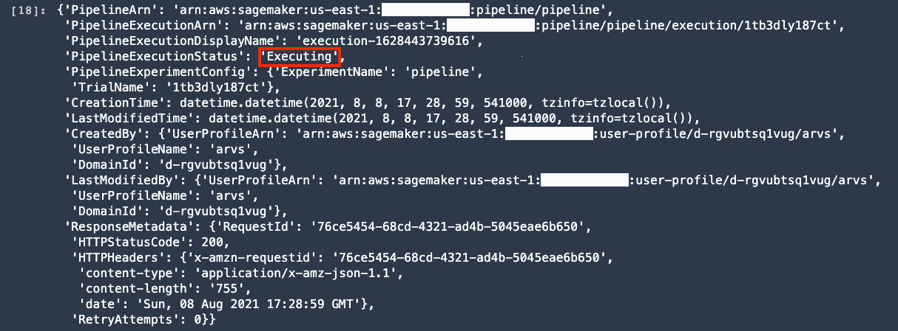图9.27–执行的结果
在这里，我们可以看到管道的执行状态仍然是“正在执行”。
- Call the wait() function to wait for the execution to complete:
execution.wait()
注意
完成此步骤大约需要8到15分钟。在等待的时候，请随意喝杯咖啡或茶！
接下来的几个步骤主要是检查我们在前面的步骤中创建的管道:
- Use the list_steps() function to inspect the progress of the steps in our execution workflow:
execution.list_steps()
这应该会给我们一个字典列表，类似于下面的截图所示:
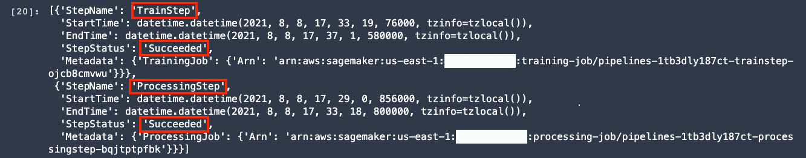图9.28–执行结果. list_steps()
从图9.28 中可以看到，加工步骤和训练步骤已经成功。
- Use LineageTableVisualizer to see the input and output artifacts that are connected to the execution steps in the workflow:
import time from sagemaker.lineage.visualizer import LineageTableVisualizer session = sagemaker.session.Session() viz = LineageTableVisualizer(session) ess = reversed(execution.list_steps()) for execution_step in ess: print(execution_step) display(viz.show( pipeline_execution_step=execution_step )) time.sleep(3)
这将为我们提供字典和值表，类似于下面的屏幕截图所示:
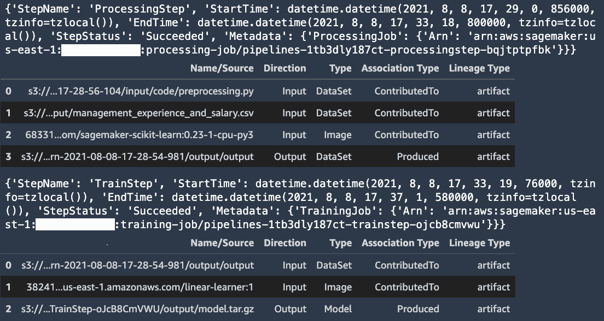图9.29–使用LineageTableVisualizer
- Navigate to the Components and registries tab and locate the pipeline we just created in this recipe: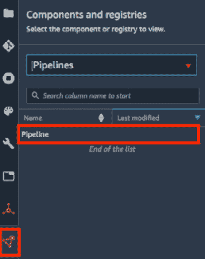
图9.30-组件和注册表
为了找到我们在这个配方中创建的管道，使用管道下拉列表列出所有的管道资源。双击映射到管道的行，类似于前面的屏幕截图所示。
- Double-click the row corresponding to the execution we triggered in this recipe using pipeline.start():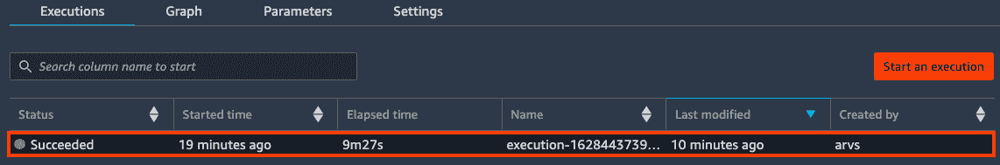
图9.31–管道执行
- We should see a graph of the execution, similar to what is shown in the following screenshot. Click the TrainStep node: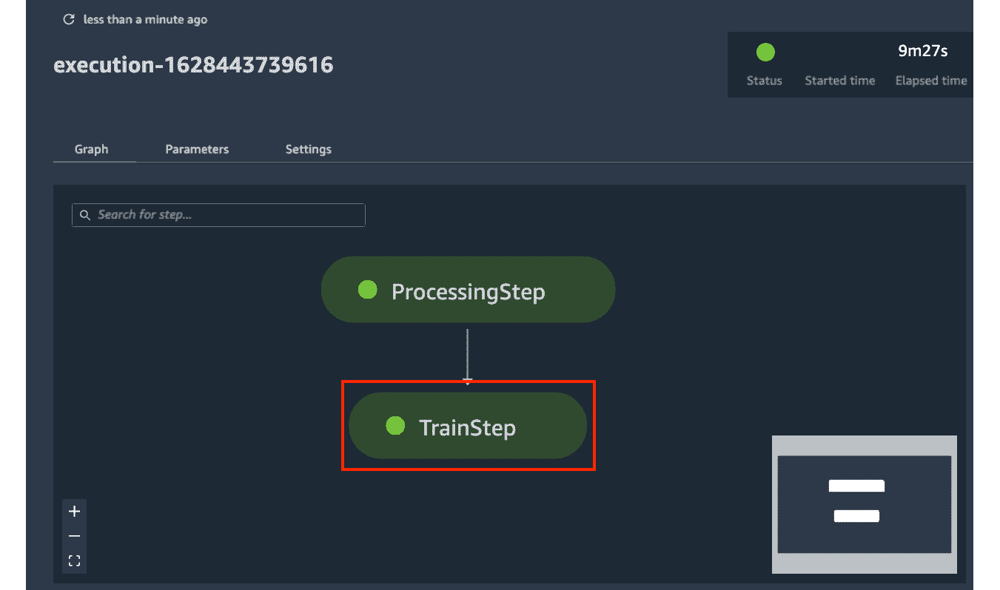
图9.32–管道图
点击 TrainStep 节点，我们会看到以下详细信息:
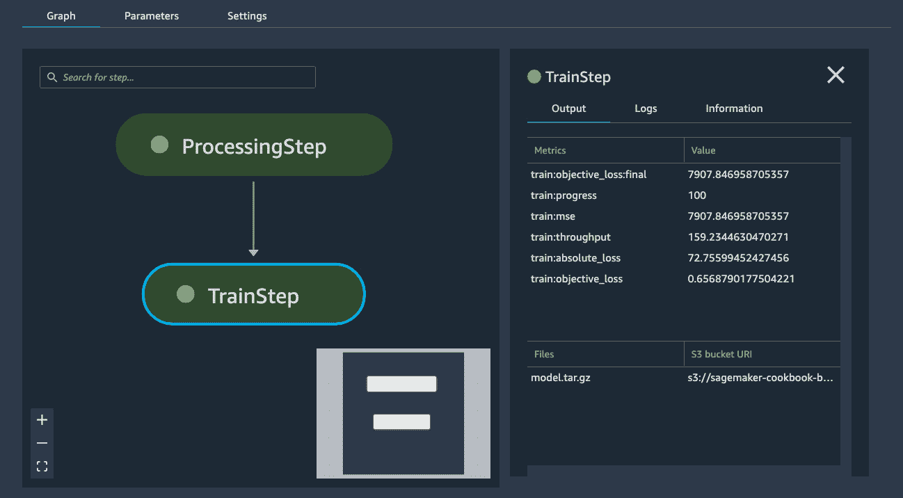图9.33–train step细节
这里，我们有训练作业信息、细节和结果，包括train:object_loss:final、train:mse、train:progress、train:throughput、train:absolute_loss和train:objective_loss的值。
小费
还可以使用pprint(pipeline.describe())来获取更多详细信息。
- Back in the notebook, use the delete() function to delete the pipeline:
pipeline.delete()
此时，管道应该被删除；但是，不应该删除创建的其他资源(例如，模型)。
现在，让我们看看这是如何工作的！
工作原理……
在这个菜谱中，我们使用 SageMaker Python SDK 中的不同类创建并执行了一个管道。与 AWS步骤函数Data Science SDK 类似， SageMaker Python SDK 中有几个类映射到机器学习工作流中的相应步骤或任务:
- ProcessingStep:这集中在诸如自动化数据处理、特征工程、数据清理和模型评估等任务上。
- TrainingStep:这侧重于模型训练和微调任务。
- CreateModelStep:这着重于从一个训练步骤的输出中创建一个SageMaker模型。
- TransformStep:这关注于使用现有的SageMaker模型在测试数据集上执行批量转换。
- RegisterModelStep:这着重于创建一个模型包，它封装了推理所需的工件和模型属性。
- ConditionStep:这允许在管道中支持条件执行。
对于一个更复杂的例子，我们可能决定创建一个新项目，并使用SageMaker提供的模板(例如，MLOps template for model building，training，and deployment )。在这里，我们将创建和使用一个相对更复杂的管道版本，它涉及到条件表达式、模型注册、自动化模型评估，甚至还有一个手动批准步骤:
图9.34-项目模板中的管道图
在本书中，我们不会深入探讨使用 SageMaker管道的本质细节，所以请随意查看下面的链接以获得关于该主题的更多信息:https://docs . AWS . Amazon . com/SageMaker/latest/DG/Pipelines . html。
亦见
如果您正在寻找在真实数据集上使用 SageMaker Pipelines 的示例和更复杂的示例，请在这里随意查看一些关注该主题的笔记本:https://github . com/AWS/Amazon-sage maker-examples/tree/master/sage maker-Pipelines/tabular。